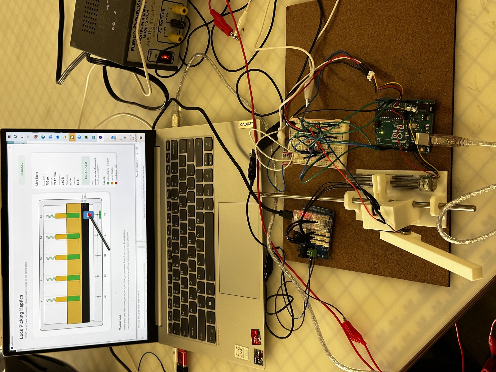

Lock Picking Master: A Haptic Lock-Picking Simulator
Stanford ME327: Design and Control of Haptic Systems · Spring 2026
- Why haptic lock picking?
- A 2-DoF haptic pick
- Rendering a pin
- Three feedback channels
- Demo Day results
- What’s next
- Team
Lock picking is a task you do by feel, not by sight — which makes it a natural test bed for force-feedback interfaces.
The key idea? Render each virtual pin as a spring-damper on a custom 2-DoF device, and layer kinesthetic force, vibrotactile clicks, and a live visualization so users can read the hidden state of the lock.

Why haptic lock picking?
What makes lock picking a good haptics problem?
Picking a pin-tumbler lock depends on subtle variations in force and stiffness rather than visual feedback. In a force-feedback system, user motion is measured and used to compute a response force from a virtual environment model — exactly what fine tool manipulation needs, since users rely on small changes in resistance to guide their motion.
We model the lock pick as a tool interacting with four virtual pin stacks, each with a different spring stiffness and target height. Our goal was a simulator that lets users feel the pins and open a virtual lock through real-time force feedback and visualization.
A 2-DoF haptic pick
How does the device map to real lock-picking motions?
The first degree of freedom is insertion depth: a linear rail and carriage driven by a stepper motor lets the user slide the pick to select a pin. The second is rotational tilt: a motorized handle with an encoder lifts the selected pin, and its angle is translated into virtual pin displacement in real time.
The lock housing, rail supports, pick handle, motor mounts, and electronics brackets were designed in CAD and 3D printed, with several iterations to improve stiffness, alignment, and ease of assembly.


The electronics pair an Arduino and an A4988 stepper driver with a Dynamixel XL330 for force rendering and an ERM vibration motor for tactile events. A host computer runs the lock simulation and talks to the hardware over serial, keeping low-level motor control separate from high-level simulation.


Rendering a pin
What should each pin feel like?
Each pin is a virtual spring-damper with its own stiffness, damping, and set position. The handle angle sets the pin lift, and the reaction force is
F = −k x − b v
where k is pin stiffness, b is damping, x is pin displacement, and v is pin velocity. The force is converted to motor torque and rendered through the Dynamixel, with velocity filtering and current limiting for stable, safe interaction.
To make it feel like a real lock, a pin only sets after being held inside a narrow set region for a fixed duration. Overshoot detection blocks setting if the user lifts too far, mimicking over-setting a real pin. Once a pin sets, the simulator fires a transient click and briefly releases the force, as if the pin dropped into place.

Three feedback channels
How does the user know what’s happening inside the lock?
The user rotates the handle to lift a pin while feeling its spring resistance. Holding it in the set range long enough sets the pin with a click; the user returns the pick to neutral and moves to the next pin until the lock opens.

Demo Day results
Could people actually feel the lock?
At the ME327 Demo Day, participants tried the simulator and filled out a post-experience survey. Users learned the interaction quickly and could reliably tell lock states apart from haptic cues alone.
- Realism of force feedback5.0 / 5.0
- System responsiveness5.0 / 5.0
- Ease of use5.0 / 5.0
- Sensation of setting a pin4.78 / 5.0
- Required precise control4.67 / 5.0
Users described the experience as “fun” and “cool to try,” and singled out the spring forces and pin-setting sensation as especially satisfying.

What’s next
What would make it feel more like a real lock?
The most common Demo Day suggestion was to split the pick and the tension wrench into two independent controls. Real lock picking is bimanual: one hand works the pins while the other applies torque to the cylinder. A second handle would enable torque-dependent binding order, oversetting, false sets, and security pins.
Since the pin-setting sensation scored slightly lower than the other categories, the click and set events could also be refined with sharper force transients and better vibrotactile cues.
Team
Serena Liu, Liwen Fan, Run Shi, Chia-Ling Weng
We thank Prof. Allison Okamura for her guidance in refining the project direction, and course assistant Megan Coram for help debugging the stepper motor setup.